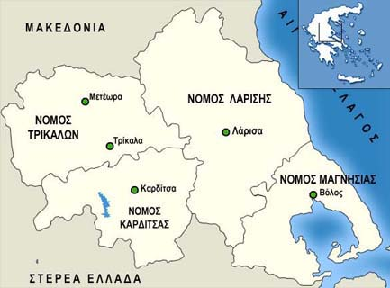

Η κουζίνα της Θεσσαλίας

Αρχική|
Κυκλαδίτικη κουζίνα |
Μακεδονική κουζίνα |
Eπτανησιακη κουζινα |
Θρακική κουζίνα |
Ηπειρωτική κουζίνα|
Κρητική κουζίνα|
Η κουζίνα της Θεσσαλίας|
Παραδοσιακά φαγητά της Θεσσαλίας